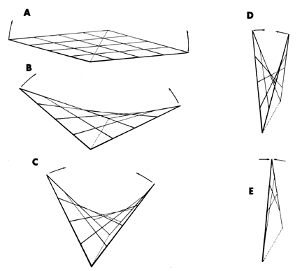

|  |
| Fig. 540.30 Hyperbolic Paraboloid: There are always only two different cross-lengths for a four- frequency hyperbolic paraboloid. As opposite vertexes of the frame are lifted, the grid lines change length at unequal rates. The moment the four-sided frame is no longer planar, the fact of two different axis lengths is revealed. |